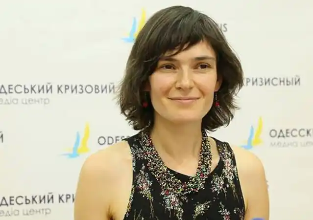
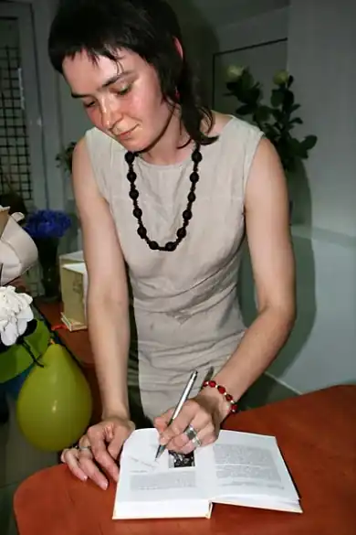

Дзвінка (Дзвенислава) Валентинівна Матіяш народилася 16 листопада 1978 року в Києві.
Має молодшу сестру Богдану Матіяш і старшу сестру Софію (Раду) Матіяш (яка вже багато років є черницею монастиря сестер студиток у Львові й також займається перекладацькою діяльністю).
Протягом 1995 — 2002 років навчалась в Національному університеті "Києво-Могилянська академія". Із 2002 до 2006 року навчалася в аспірантурі у Європейському колегіумі польських та українських університетів (Люблін, Польща). Упорядник антології української та білоруської поезії "Зв'язокрозрив/Сувязьразрыў. Антологія сучасної української та білоруської поезії (Київ: Критика, 2006) разом із Остапом Сливинським і Андреєм Хадановічем книги — "Зросла собі квітка" (2009). Переклала окремі книжки: А. Хадановіч "Листи з-під ковдри" (Київ: Факт, 2002); Ян Твардовський "Гербарій" (Київ: Грані-Т, 2008); Ян Твардовський "Ще одна молитва" (Київ: Грані-Т, 2009); З. Подґужец "Розмови з Єжи Новосєльським про мистецтво" (Київ: Темпора, 2011); В. Шабловський "Убивця з міста абрикосів" (Київ: Темпора, 2012); Р. Капусцінський "Імперія" (Київ: Темпора, 2012). Авторка книжок: "Реквієм для листопаду" (2005), "Роман про батьківщину" (2006), "Казки П'ятинки" (2010), "Історії про троянди, дощ і сіль" (2012). Її письму притаманний католицький містицизм, аскетична чутливість, а її внутрішні монологи раз-по-раз набувають рис молитовної піднесеності Нагороди: книга "Казки П'ятинки" ввійшла до списку фіналістів премії "Великий Їжак"(2011); книга "Історії про троянди, дощ і сіль" увійшла до довгого списку номінантів щорічної премії "Книга року ВВС-2012", а також отримала премію Фонду Петра і Лесі Ковалевих (2013). Як автор україномовних книжок для дітей ("Казки П’ятинки") увійшла до числа фіналістів першої недержавної, незалежної премії для дитячих письменників "Великий Їжак" 2012 року. Твори Абетка казок: "Автобус бажань", "Білий Кіт", "Велике Вухо", "Глечики" 2015, Абетка казок: Звірі говорять з П'ятинкою; Іжак Ніч: казки 2010, Абетка казок: П'ятинка і сад: казка 2010, Абетка казок: Удома в П'ятинки; Хмара: казки 2010, Абетка казок: Цитриновий сік; Чобітки; Шкарпетки; Щедрий вечір: казки 2010, Абетка казок: "Шкарпетки", "Щедрий вечір", "Юшка", "Яблука" 2015, Абетка казок: Юшка; Яблука: казки 2010, Автобус бажань; Білий кіт; Велике вухо: казки 2010, Ганок: казка 2010, Казки П’ятинки: казки та оповідання 2010, Ослик і Чумацький шлях: казка 2010, Роман про батьківщину: роман 2006.